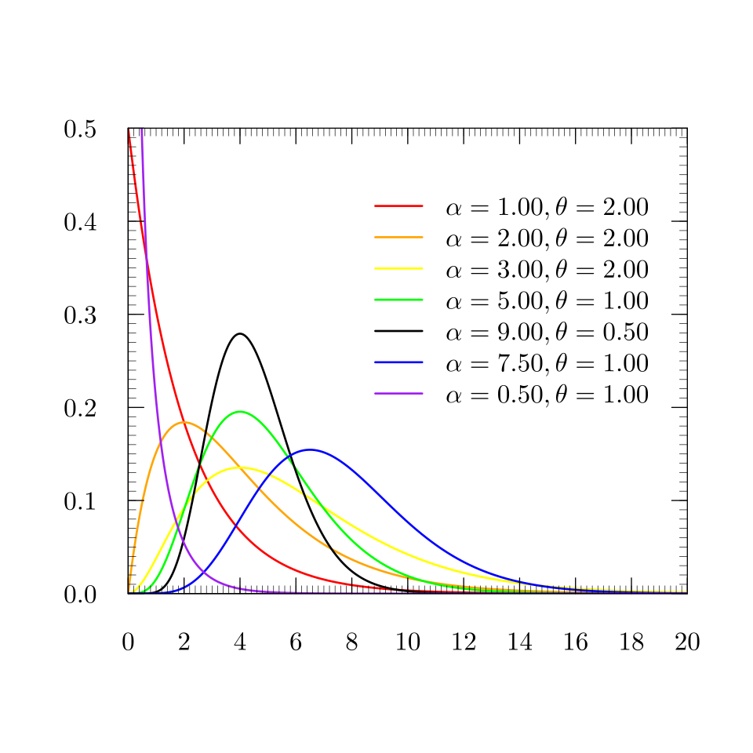

Distribution
Gaussian distribution
For a Gaussian over a vector \(\mathbf{x} \in \mathbb{R}^D\):
https://peterroelants.github.io/posts/multivariate-normal-primer/
Exponential Family
The exponential family of distribution over \(x\), given some parameters \(\eta\), is defined to be the set of distributions of the form
\(\eta\): natural parameters of the distribution \(g(\eta)\): coefficient to ensure distribution is normalized and satisfies \(g(\eta) \int_x h(x) \exp\{\eta^Tu(x)\}dx = 1\)
Bernoulli distribution
Here \(\eta = \ln\left(\frac{\mu}{1-\mu}\right)\), then we have
Compare with equation \(\eqref{eq:exp-fam}\), we can see
- \(u(x) = x\)
- \(h(x) = 1\)
- \(h(\eta) = \sigma(-\eta)\)
Multinomial Distribution
We can also write in \(\eqref{eq:exp-fam}\) such that \(\eta = \ln \mu\) and \(p(x\mid \eta) = \exp(\eta^T x)\)
- \(u(x) = x\)
- \(h(x) = 1\)
- \(g(\eta) = 1\)
But because of the constraint \(\sum_{k=1}^M \mu_k = 1\) and \(\sum_{k=1}^M x_k = 1\) (since prml use one-hot representation)
Thus
Here define \(\eta_k = \ln\left( \frac{\mu_k}{1 - \sum_{j=1}^{M-1} \mu_j} \right)\) and solve for \(\mu_k\) gives
Tip
The expression derived in PRML is
which may appear different from the usual softmax
The reason is that the multinomial distribution has only \(M-1\) independent parameters and \(\exp(\mu_M) = \exp\ln(\frac{\mu_M}{\mu_M}) = 1\).
Thus \(A(\eta) = \ln\left( 1 - \sum_{k=1}^{M-1} \mu_k \right) = \ln (1+\sum_{k=1}^{M-1} \exp(\eta_k))\).
Tip
The two forms of the exponential family are equivalent:
and
with \(A(\eta)=-\ln g(\eta)\).
- \(u(x) = x\)
- \(h(x) = 1\)
- \(g(\eta) = \left(1 + \sum_{k=1}^{M-1} \exp(\eta_k)\right)^{-1}\)
Prior
| Distribution | Prior |
|---|---|
| Bernoulli | Beta |
| multinomial | Dirichlet |
Mode
a mode is the value or point in a distribution where the probability is at its maximum.
Precision Matrix
The precision matrix is the inverse of covariance matrix of a multivariate Gaussian
It measures how concentrated and certain the distribution is. In 1-D it's reciprocal of variance \(\lambda = 1/\sigma^2\)
KL-divergence
- If q is high and p is high then we are happy.
- If q is high and p is low then we pay a price.
- If q is low then we don’t care (because of the expectation)
Gamma Distribution

For
highest point occurs at \(\boxed{x_{\max}=\frac{\alpha-1}{\beta}}\)